重點摘要
- 迴音強度（echogenicity）三分類是描述任何超音波影像的共同語言：高迴音（hyperechoic，強反射，呈白色）、低迴音（hypoechoic，中等反射，呈灰色）、無迴音（anechoic，無反射，呈黑色，代表液體）——之後每一個器官、每一個病灶的描述都建立在這三個詞彙上。
- 探頭選擇是頻率與穿透力的取捨：凸陣探頭（convex）用於腹部（低頻大型犬／高頻小型動物），線陣探頭（linear）用於淺層構造，另有專用心臟探頭；頻率越高解析度越好但穿透深度越淺，這組取捨關係是臨床選探頭的核心邏輯。
- 五種常見偽像各自對應特定臨床線索，是國考最愛考的辨識題：聲影（acoustic shadowing，乾淨影＝骨骼／結石，髒影＝氣體與糞便）、邊緣聲影（edge shadowing，彎曲構造邊緣的三角形低迴音區）、後方回音增強（acoustic enhancement，聲波易穿透的構造後方組織假性增亮）、多重反射（reverberation，遇氣體等高反射界面產生等距平行線）、鏡像偽像（mirror image，大而平滑的強反射界面使構造在對側重複出現）。
- 胸腔 POCUS 的核心是「有沒有 glide sign／B-line」來排除氣胸，而不是找肺葉本身：正常乾肺＝glide sign＋A-line（呼吸時肋膜線滑動＋規則等距的水平多重反射線）；濕肺／肺水腫或挫傷＝B-line（ultrasound lung rocket，源自肋膜線、延伸至遠場、隨呼吸滑動的垂直高迴音線）；氣胸＝有 A-line 但沒有 glide sign，只要能找到 glide sign 或 B-line，就可以排除該處氣胸。
- 心臟超音波五種標準切面＋M-mode＋都卜勒是心臟評估的完整工具組：右胸骨旁長軸／短軸、左心尖、左胸骨旁、劍突下五種切面各自呈現不同心臟結構角度；M-mode 記錄心臟短軸徑隨時間變化（用於測量心室收縮／舒張功能）；脈衝波都卜勒（PWD）精確測定特定一點的流速，連續波都卜勒（CWD）沒有流速上限但無法定位確切深度。
- 肝臟六葉與膽囊的特徵外觀是腹部超音波最基本的地標：肝臟分尾葉、右外／右內側葉、方形葉、左外／左內側葉共六葉；正常膽囊呈無迴音、淚滴狀，貓偶爾呈雙葉狀；膽囊黏液囊腫（mucocele）呈「奇異果樣（kiwifruit-like）」或「星狀（stellate）」圖案，是需要緊急手術評估的重要影像所見。
- 腸道正常五層構造與腸套疊的靶樣徵象是腸胃道超音波辨識的兩大基礎：正常腸壁由內而外呈黏膜／黏膜下層／肌肉層／漿膜下層／漿膜交替的高低迴音層次；腸套疊在橫切面上呈現同心圓的「靶樣（target）」徵象，縱切面上可見腸段互相套疊（intussusceptum 套入 intussuscipiens）。
- 腎臟與膀胱病灶的鑑別建立在迴音質地與形態變化：慢性腎病常見皮髓質分界模糊、皮質迴音增強；多囊腎（PKD）呈現多發無迴音囊泡；阻塞性水腎／輸尿管擴張呈現腎盂與輸尿管的無迴音擴張；膀胱移形上皮癌（TCC）好發於膀胱三角區，呈現由膀胱壁向腔內突出的不規則腫塊——這些都是臨床病例整合題的常見素材。
成像原理、探頭與都卜勒 Physics, Transducers & Doppler
超音波是利用聲波產生黑白影像以觀察體內構造的診斷影像技術；理解「回音如何形成」與「探頭如何選擇」是判讀所有後續影像的基礎。
什麼是超音波檢查？
- 屬於診斷性醫學影像程序，利用聲波產生螢幕上的黑白影像，藉此觀察體內構造
- 探頭（transducer）頻率約 3–12 MHz；聲波在組織中傳遞時，會被吸收或反彈回探頭頭端的壓電晶體
- 影像由數百條個別的掃描線組成；回音（echoes）在不同聲阻抗（acoustic impedance）的組織界面產生，界面聲阻抗差異越大、回音越強，因此呈現不同的迴音強度
- 每一個回音根據發射脈衝與接收訊號之間的時間差，被解剖學定位在影像上的對應深度
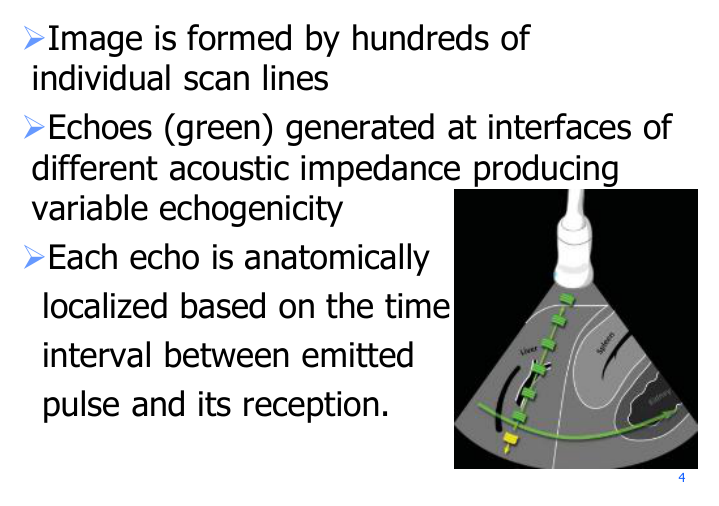
迴音強度 Echogenicity重要
強反射，影像上呈白色（如骨骼、結石、脂肪）
中等反射，影像上呈灰色（大多數實質器官）
無反射，影像上呈黑色（代表液體，如膽汁、尿液、積液）
探頭種類 Transducers
凸陣探頭（Convex）與線陣探頭（Linear）是最常用的兩種：
| 類型 | 特性 | 常見用途 |
|---|---|---|
| A：凸陣，低頻 | 穿透力較強 | 大型犬腹部超音波 |
| B：凸陣，高頻 | 解析度較高，穿透較淺 | 小型動物腹部超音波 |
| C：線陣 | 寬而平的接觸面 | 淺層構造（甲狀腺、肌腱、體表腫塊） |
| D：心臟專用探頭 | 扇形視野、高幀率 | 心臟超音波（echocardiography） |
※ 頻率越高、解析度越好，但組織穿透深度越淺，是選擇探頭時最核心的取捨（trade-off）。
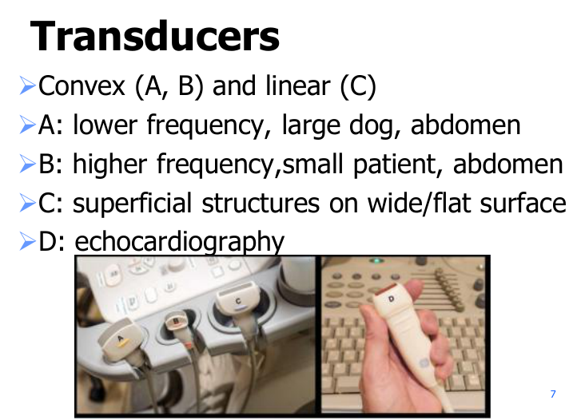
增益設定 Gain Setting
超音波在組織中傳遞時會逐漸衰減（attenuate），因此接收到的回音必須經過放大（增益）調整，且需分別調整近場（near）與遠場（far）增益，才能得到均勻一致的影像亮度。
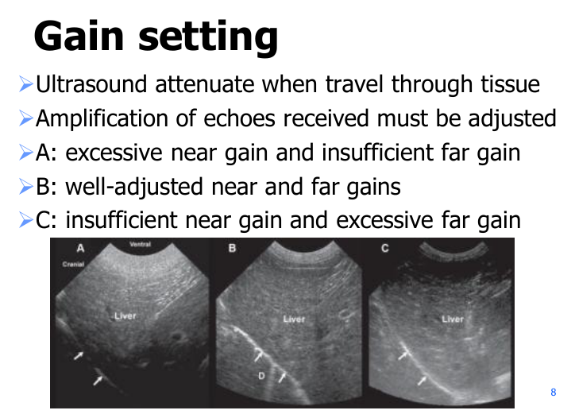
都卜勒效應 Doppler Effect
紅血球（RBC）朝探頭方向移動時，回音頻率增加（影像上多顯示為紅色）；紅血球遠離探頭方向移動時，回音頻率降低（影像上多顯示為藍色）——這是彩色都卜勒（color Doppler）判色的基礎。
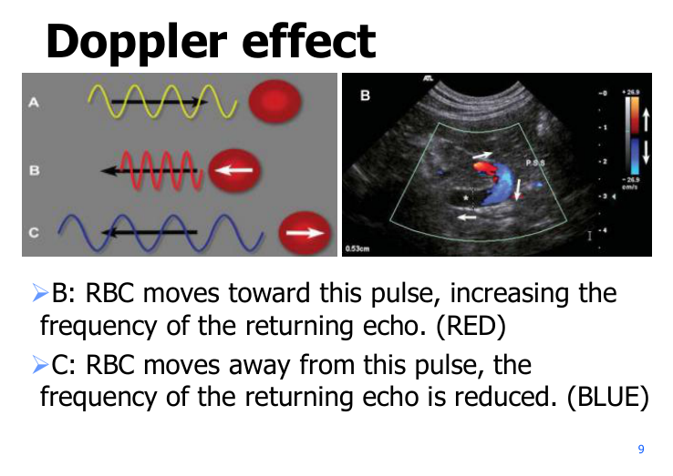
脈衝波都卜勒 Spectral (Pulsed-Wave) Doppler
用於檢測特定一點的血流狀況，可長時間精確評估流速（velocity）、方向（direction）與流動均勻度（uniformity）。與連續波都卜勒（CWD）的差異、及流速判讀慣例，於「都卜勒心臟超音波」章節詳述。
常見偽像 Common Artifacts
超音波偽像不是「雜訊」，而是聲波物理特性所產生、具臨床判讀意義的固定模式；辨識這五種偽像是所有後續器官判讀的前提。
聲影 Acoustic Shadowing
高度衰減或高反射構造後方出現一個回音振幅降低的區域。
如骨骼、結石（calculi）——聲波幾乎完全被阻擋或反射
如大腸內混合的氣體與糞便——多重反射造成不均勻的低迴音區
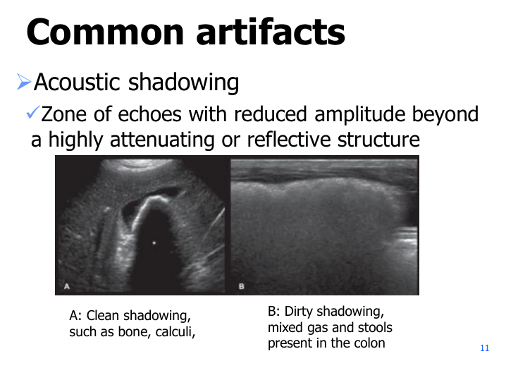
邊緣聲影 Edge Shadowing
在彎曲構造的邊緣出現獨立的三角形低迴音區，是聲波在曲面邊緣發生折射所致，需與真正的病灶（如結構破裂）區分。
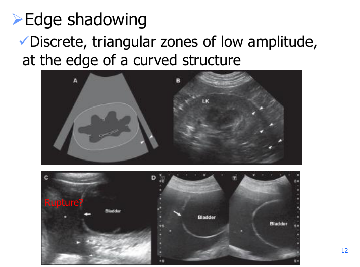
後方回音增強 Acoustic Enhancement
聲波容易穿透的構造（如液體）後方，仍能維持較高強度到達更深的組織 → 反射回探頭的回音也更多 → 深層組織的迴音強度出現假性增亮（artifact），常見於囊腫或膀胱後方。
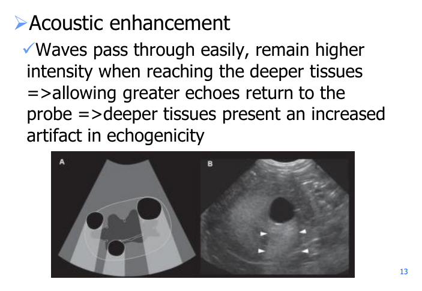
多重反射 Reverberation
當聲波遇到高反射界面（如氣體）時，聲波在探頭與界面之間來回反射，形成一系列等間距的平行線。
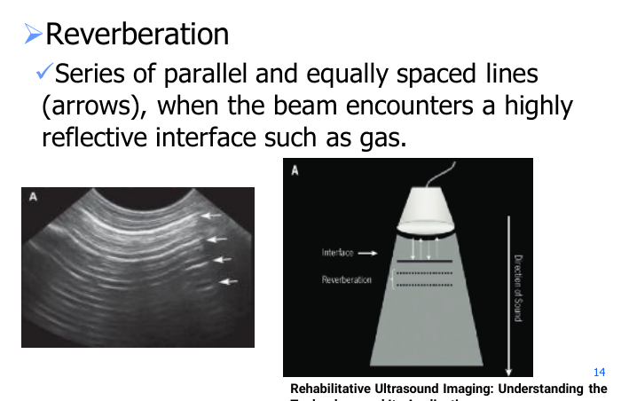
鏡像偽像 Mirror Image
當存在大而平滑、曲面且強反射的組織界面時，該界面另一側會出現原構造的重複（鏡像）影像，常見於橫膈附近（如肝臟／膽囊在橫膈另一側出現鏡像）。
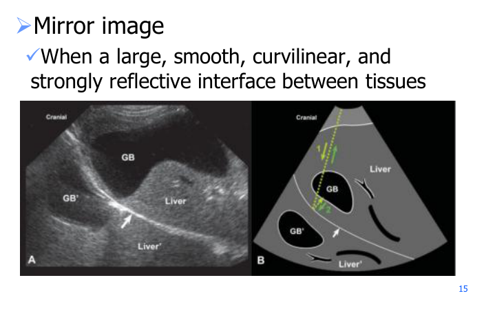
五種偽像速查表
| 偽像 | 成因 | 影像特徵 |
|---|---|---|
| 聲影（乾淨／髒） | 高度衰減或反射的構造 | 構造後方低迴音區 |
| 邊緣聲影 | 曲面邊緣的聲波折射 | 三角形低迴音區，位於彎曲構造邊緣 |
| 後方回音增強 | 聲波易穿透的液體構造 | 構造後方組織假性增亮 |
| 多重反射 | 高反射界面（氣體）來回反射 | 一系列等間距平行線 |
| 鏡像偽像 | 大而平滑強反射界面（如橫膈） | 構造於界面另一側重複出現 |
胸腔超音波（POCUS）Thoracic Ultrasonography
胸腔重點式超音波（POCUS）的核心任務不是逐一描述肺葉，而是快速回答「有沒有氣胸／肋膜積液／肺水腫」，靠的是幾個固定的徵象組合。
三個標準掃查部位
Chest tube site，肋間最高點附近，用於偵測氣胸
Pericardial site，用於偵測心包積液
Diaphragmatico-hepatic，用於偵測肋膜積液與橫膈疝氣
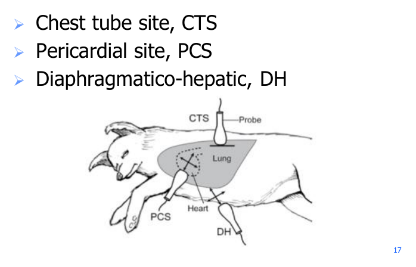
Gator（alligator）sign 與肋膜肺線
於胸管部位（CTS）掃查時，肋骨的聲影與肺表面的肋膜肺線（pleural-pulmonary line, PP-line）共同構成類似「鱷魚」的影像輪廓，是後續判讀 glide sign／A-line／B-line 的解剖地標。
正常乾肺：Glide Sign 與 A-line
Glide sign（滑動徵象）：PP-line 隨呼吸出現前後滑動。A-line：PP-line 深方出現一系列規則、等間距的水平多重反射線，是正常含氣肺的特徵。
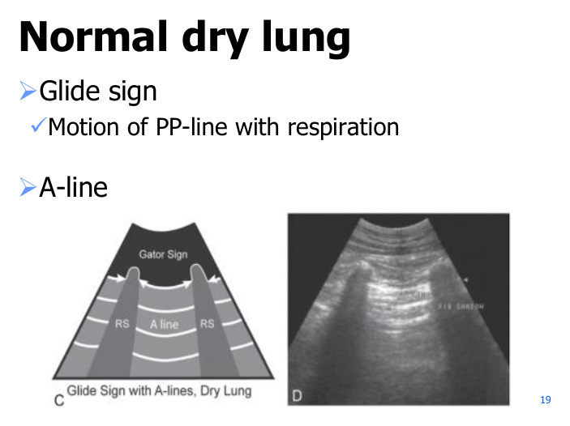
濕肺：B-line（Ultrasound Lung Rocket）重要
B-line（又稱 ultrasound lung rocket）呈楔形（wedge-shaped），源自肋膜線、延伸貫穿至遠場、並隨呼吸與 glide sign 一起移動，代表肺間質／肺泡含水量增加（肺水腫、肺挫傷、肺炎等）。
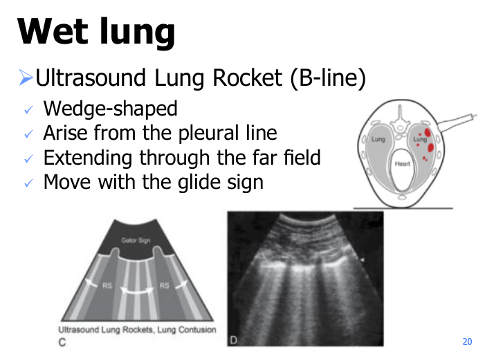
肺葉扭轉 Lung Lobe Torsion
受影響的肺葉呈現「肝化（hepatized）」外觀且腫大——影像質地類似肝臟實質，是肺葉扭轉的特徵性表現。
氣胸 Pneumothorax重要
氣胸的超音波表現是有 A-line 但沒有 glide sign；只要在該掃查部位找到 glide sign 或 B-line（ultrasound lung rocket）任一項，即可排除該處氣胸。
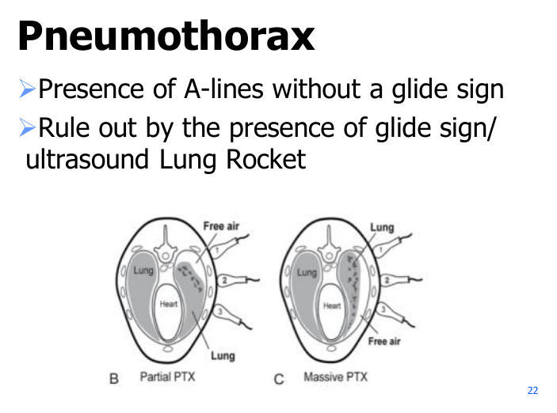
胸壁／肋膜病變：Step Sign
PP-line 正常線性連續性中斷（disruption of normal linear continuity），提示胸壁或肋膜的結構性病變。
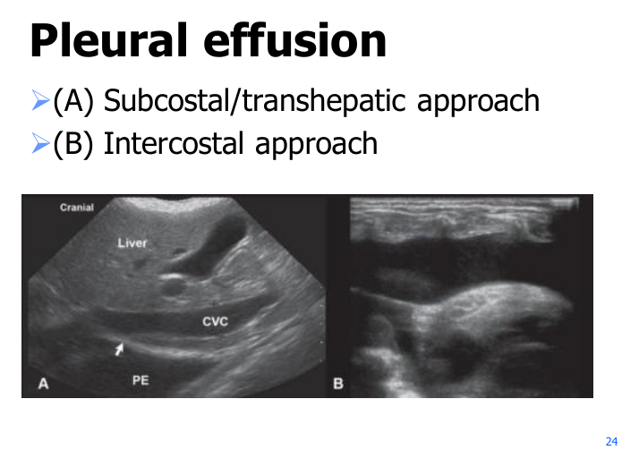
其他胸腔病灶
- 縱膈腔（mediastinum）：需鑑別脂肪堆積與液體或縱膈腫塊
- 橫膈疝氣（diaphragmatic herniation）：橫膈正常的高迴音弧形連續性消失，可於胸腔內見到肝臟、膽囊等腹腔臟器，心臟可能因周圍臟器遮蔽而難以定位
胸腔 POCUS 徵象速查表
| 徵象 | 代表意義 |
|---|---|
| Glide sign ＋ A-line | 正常乾肺 |
| B-line（lung rocket） | 肺間質／肺泡含水量增加（肺水腫、挫傷、肺炎） |
| A-line 但無 glide sign | 氣胸 |
| 肺葉「肝化」腫大 | 肺葉扭轉 |
| Step sign（PP-line 中斷） | 胸壁／肋膜病變 |
| 胸壁與肺臟間無迴音區 | 肋膜積液 |
| 橫膈連續性消失＋腹腔臟器入胸 | 橫膈疝氣 |
心臟超音波：方位與五種標準切面 Echocardiography: Orientation & Standard Views
心臟超音波（echocardiography）評估的項目固定、切面固定，熟悉五種標準切面的探頭位置與呈現構造，是判讀後續心臟疾病影像的基礎。
評估項目
大小、形態
心肌厚度、收縮性
結構、開合
瓣膜／流出道狹窄
Systolic/diastolic function
都卜勒測定
瓣膜關閉不全
方位與解剖 Orientation and Anatomy
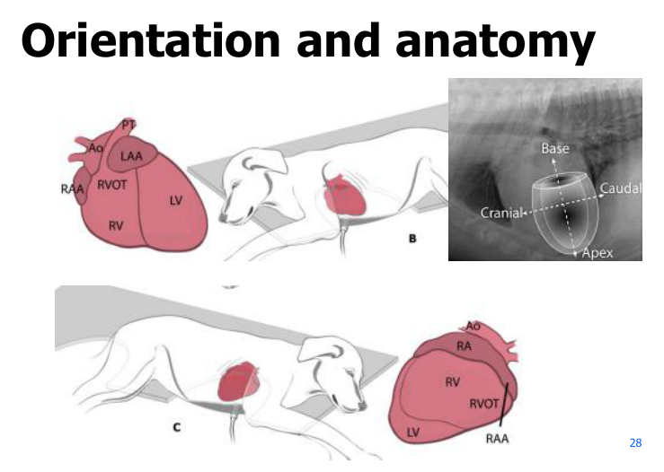
五種標準切面重要
| 切面 | 探頭位置 |
|---|---|
| 右胸骨旁長軸 Right Parasternal Long Axis | 右側胸骨旁，探頭平面與心臟長軸平行 |
| 右胸骨旁短軸 Right Parasternal Short Axis | 右側胸骨旁，探頭旋轉 90 度與心臟短軸垂直 |
| 左心尖 Left Apical | 左側心尖附近，可獲得四腔室觀 |
| 左胸骨旁 Left Parasternal | 左側胸骨旁，常用於評估流出道與都卜勒對位 |
| 劍突下 Subcostal | 劍突下方，可搭配彩色都卜勒評估血流 |
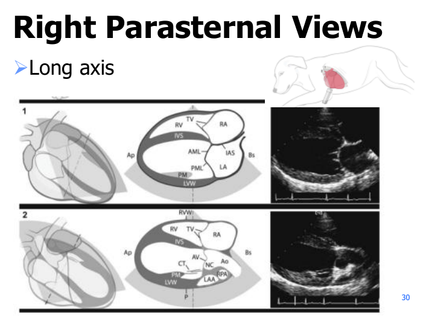
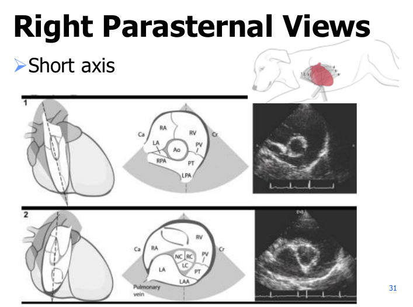
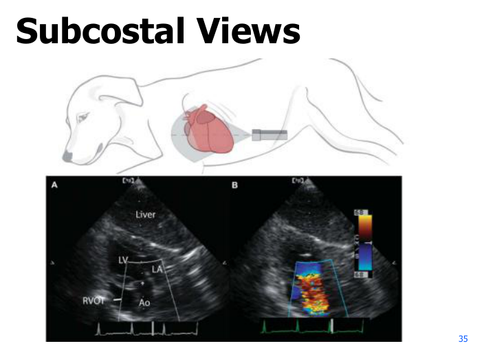
M-mode 超音波心動圖重要
M-mode（motion-mode）記錄心臟短軸徑隨時間變化的連續波形，常用於精確測量心室內徑、室間隔與游離壁厚度，據此計算收縮期／舒張期功能參數（如 FS、EF）。是心臟超音波中最常被要求「動手量」的一張切面，操作手法與測量點務必熟記。
右側躺（right lateral recumbency）→ 於右胸骨旁短軸切面先找到乳突肌／腱索層級（mushroom view）→ 切換至 M-mode，將取樣線（cursor）放在兩個乳突肌的正中間、垂直貫穿心室，避開乳突肌本身，才能量到正確、有代表性的心室壁與腔室徑。
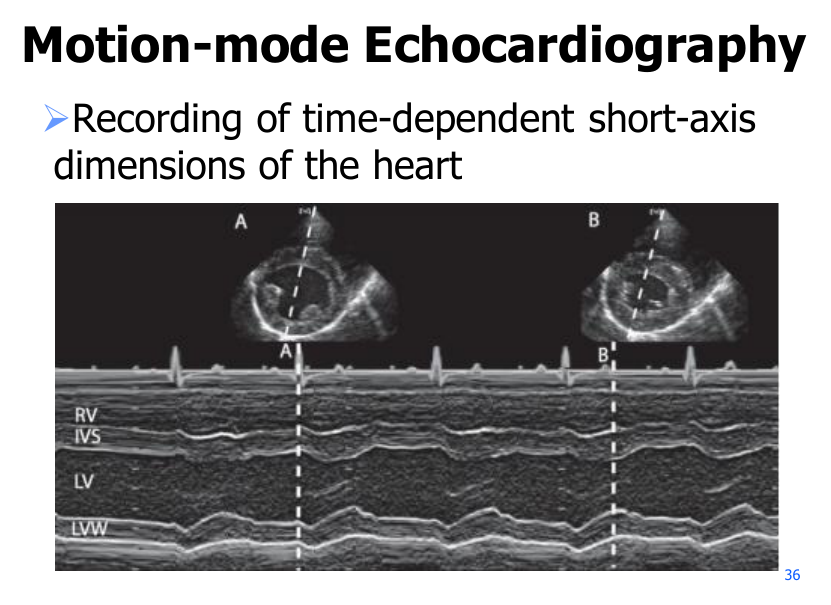
找 5 個點：M-mode 測量的 5 個交界點
從近場到遠場，M-mode 取樣線依序穿過 4 個構造、共 5 個組織交界點；在舒張末期（ED，約在心電圖 QRS 波起始處）與收縮末期（ES，LV 腔室最小處）各標記一次，即可推算出 4 組「舒張期／收縮期」共 8 個測量值。
| 測量值 | 對應點 | 生理意義 | 臨床應用 |
|---|---|---|---|
| RVIDd／RVIDs 右心室內徑 | 點①–② | 右心室腔室大小 | RV 容積負荷過重時增大（如嚴重三尖瓣逆流、心絲蟲病、肺動脈高壓） |
| IVSd／IVSs 室間隔厚度 | 點②–③ | 室間隔心肌厚度 | HCM（肥厚型心肌病）時增厚；DCM（擴張型心肌病）時變薄 |
| LVIDd／LVIDs 左心室內徑 | 點③–④ | 左心室腔室大小，用於計算 FS% | DCM／CDVD（容積負荷過重）時 LVIDd 增大；HCM 時 LVIDd 常正常或偏小 |
| LVPWd／LVPWs 左心室游離壁厚度 | 點④–⑤ | 左心室游離壁心肌厚度 | HCM 時增厚（常與 IVS 同步增厚，呈對稱性肥厚）；DCM 時變薄 |
FS% = (LVIDd − LVIDs) ÷ LVIDd × 100
短軸縮短率（Fractional Shortening）── 犬正常參考值約 25–45%
FS% 反映的是單一維度的收縮功能、且高度受前負荷（preload）影響：容積負荷過重的代償早期（如慢性二尖瓣逆流／CDVD）常因 LVIDd 增大而使 FS% 假性正常甚至偏高，須合併 LA/Ao、LVIDd 常態化數值與臨床病史綜合判斷，不能只看單一 FS% 數字判斷心臟收縮力是否正常；相關疾病影像特徵請見「都卜勒心臟超音波與常見心臟病」一節的 DCM／HCM／CDVD 說明。
都卜勒心臟超音波與常見心臟病 Doppler Echocardiography & Common Cardiac Diseases
都卜勒是評估血流方向與流速的工具，臨床上用於辨識瓣膜逆流、狹窄與各類心肌病；本節整理最常考的幾個犬貓心臟病代表性影像。
都卜勒模式：PWD vs. CWD
Pulsed-wave Doppler，可精確定位特定一點的流速，但流速有上限（超過上限會出現混疊 aliasing）
Continuous-wave Doppler，沒有實際的流速上限，但無法精確定位深度（沿整條取樣線疊加訊號）
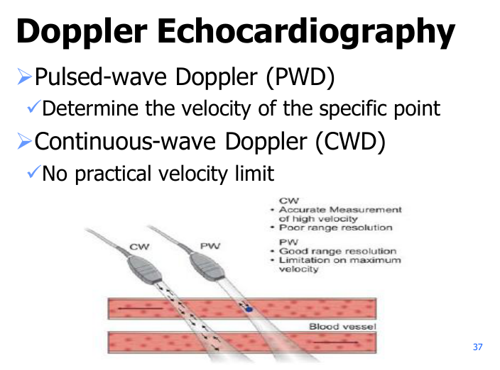
流速判讀慣例 Velocity Convention
頻譜都卜勒波形的基準線（baseline）代表 0 m/s；基準線上方代表血流朝向探頭，下方代表血流遠離探頭；量測時取樣線應盡可能與血流方向平行，角度誤差會低估實際流速。
慢性退化性瓣膜病 CDVD（二尖瓣逆流）重要
Chronic degenerative valve disease，犬最常見的後天性心臟病，好發於二尖瓣（mitral valve），造成二尖瓣逆流（MR）。
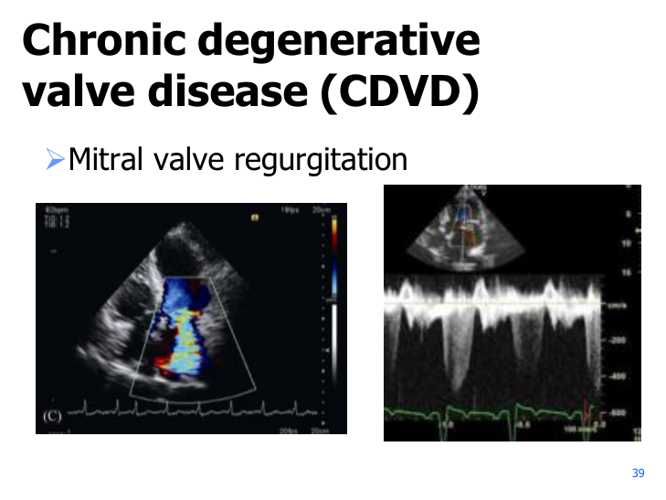
擴張型心肌病 DCM
Dilated cardiomyopathy，特徵為心室擴張合併收縮力下降，好發於大型犬品種。
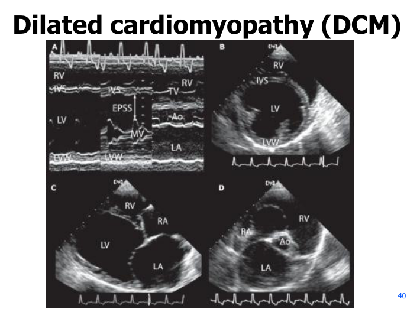
肥厚型心肌病 HCM
Hypertrophic cardiomyopathy，特徵為心室壁（尤其是室間隔與游離壁）不成比例增厚，是貓最常見的心臟病。
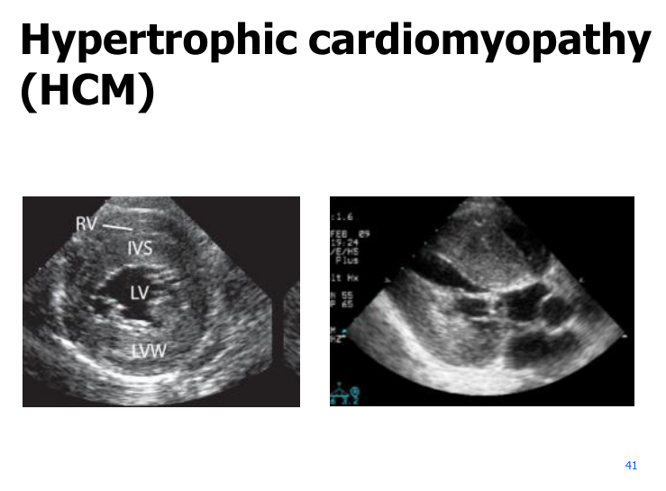
心絲蟲病 Heartworm (Dirofilariasis)
成蟲可於右心房、右心室及肺動脈內以超音波直接觀察到平行線狀（雙軌狀）高迴音構造。
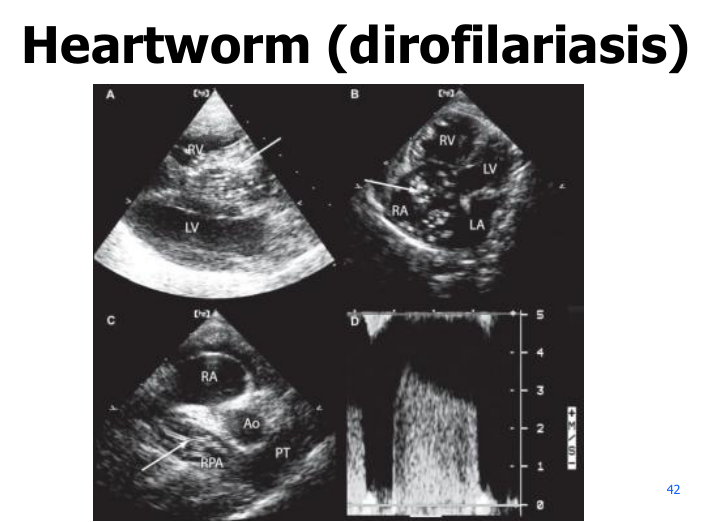
心包積液與心包填塞 Pericardial Effusion & Tamponade
心包腔內出現無迴音積液（PE），大量積液合併心臟舒張受限時稱為心包填塞（tamponade），屬心臟科急症。
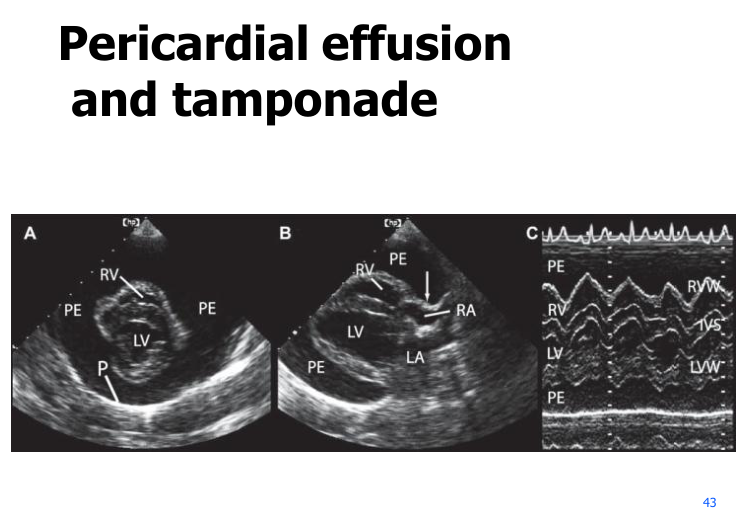
肝臟與膽道系統、脾臟 Liver, Biliary System & Spleen
肝臟六葉的命名與膽囊的特徵外觀，是腹部超音波掃查最基本的地標；膽囊黏液囊腫的影像特徵是臨床急症判讀重點。
肝臟六葉 Liver: 6 Lobes
肝臟分為尾葉（Caudate）、右外側葉（Right lateral）、右內側葉（Right medial）、方形葉（Quadrate）、左外側葉（Left lateral）、左內側葉（Left medial）共六葉，掃查時分矢狀面（sagittal）與橫切面（transverse）系統性評估。
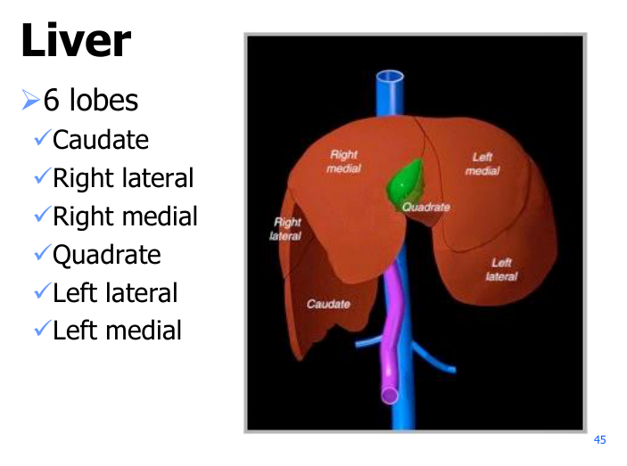
※ 肝臟迴音相對低迴音、質地較顆粒狀；肝臟迴音大致與右腎皮質相近（isoechoic），是評估肝臟是否瀰漫性病變的重要參考基準。
肝臟病灶：肝腫瘤 Hepatic Neoplasm
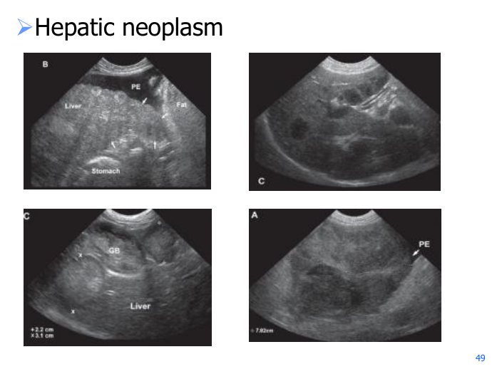
膽道系統 Biliary System
正常膽囊呈無迴音、淚滴狀（teardrop-shaped）構造，貓偶爾呈雙葉狀，並可見與其相連的膽囊管（cystic duct）；正常膽囊壁應薄而平滑，厚度小於 1 mm。
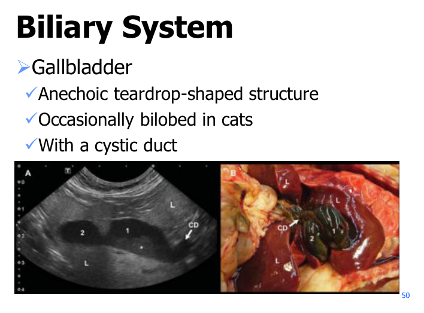
膽泥（sludge）常在無臨床症狀動物身上被偶然發現，重新擺位後膽泥應隨重力移動，可藉此與附著性病灶區分。
膽囊壁水腫與黏液囊腫 重要
膽囊黏液囊腫（mucocele）典型呈現「奇異果樣（kiwifruit-like）」或「星狀（stellate）」圖案，是需要緊急評估手術與否的重要影像所見；膽囊壁水腫則可見雙層或多層迴音構造。
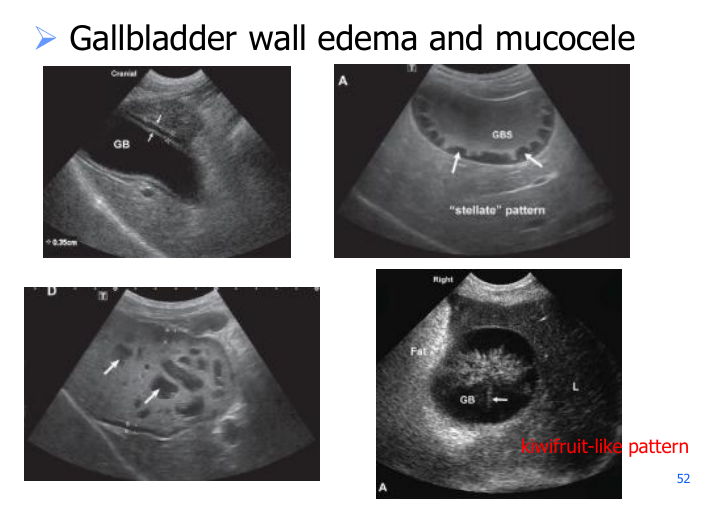
脾臟 Spleen
位於左側顱背側腹腔，緊鄰胃臟尾側及腹壁，其位置會隨胃內容物充盈程度而變化。脾臟出現大小不一、迴音強度不均的結節（nodule）是常見但非特異性的發現，鑑別診斷範圍廣，包含多發性脾梗塞壞死、纖維組織細胞增生結節、脾臟淋巴瘤、髓外造血、肉芽腫性脾炎、瀰漫性組織細胞肉瘤、脾臟髓脂肪瘤、血管肉瘤等，需搭配細胞學／組織學確診。
腸胃道 Gastrointestinal Tract
腸胃道超音波判讀的核心是「正常五層構造是否保持」，腸套疊的靶樣徵象與異物聲影是最常見的臨床急症影像所見。
掃查與正常層次構造
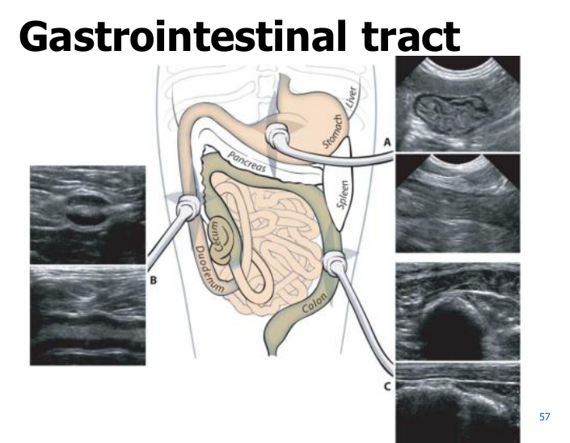
正常腸道五層構造重要
正常腸壁由內而外呈現黏膜（mucosa）／黏膜下層（submucosa）／肌肉層（muscularis）／漿膜下層／漿膜（serosa/subserosa）交替的高低迴音層次，任一層的增厚或層次消失都提示病變。
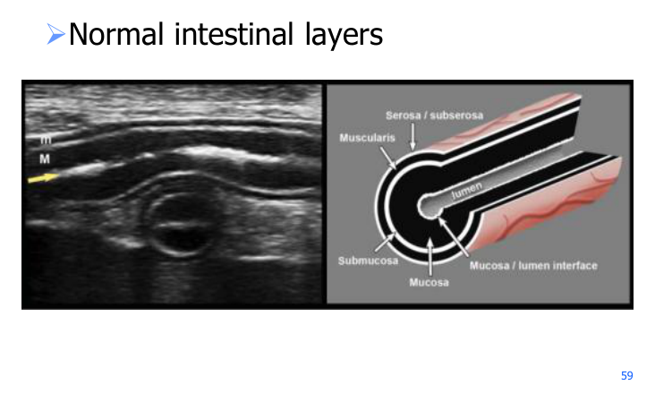
腸壁厚度參考值
| 物種／體重 | 胃 | 十二指腸 | 空腸 | 迴腸 | 盲結腸 |
|---|---|---|---|---|---|
| 犬 <15 kg | 2–5 mm | 3.8 mm | 3.0 mm | 3.0 mm | 1.5 mm |
| 犬 15–30 kg | 2–5 mm | 4.1 mm | 3.5 mm | 3.5 mm | 1.5 mm |
| 犬 >30 kg | 2–5 mm | 4.4 mm | 3.8 mm | 3.8 mm | 1.5 mm |
| 貓 | 2–4 mm | 2.2 mm | 2.2 mm | 2.8 mm | 1.5 mm |
※ 犬的腸壁厚度參考值依體重分級而非單一數值，是計算題／病例整合題常考的細節。
腸套疊 Intussusception重要
近端腸段（intussusceptum）套入遠端腸段（intussuscipiens），橫切面上呈現多層同心圓的「靶樣（target）」徵象。
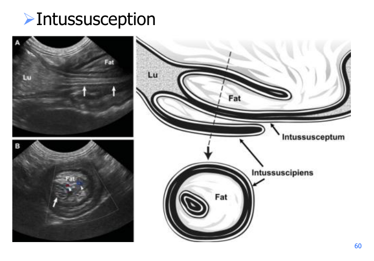
腸胃道異物 Foreign Bodies
常見型態包含圓形玩具球（play balls）、橡皮筋（elastic bands）、硬塑膠異物、線狀異物（linear foreign bodies），各自有不同的聲影特徵（如圓形物體造成弧形聲影、線狀異物可能合併腸道摺疊堆積外觀）。
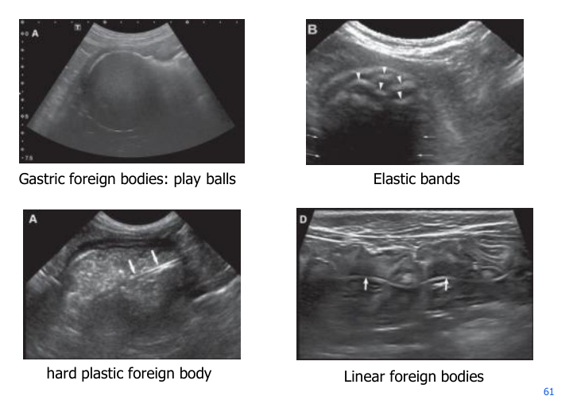
黏膜病變
- 黏膜迴音增強合併斑點狀高迴音：見於淋巴漿細胞性腸炎（lymphocytic-plasmacytic enteritis）；也可見於剛進食後，消化結束後斑點會消失，須避免誤判為病理性變化
- 黏膜高迴音條紋（mucosal hyperechoic striations）：與黏膜層垂直排列的線狀高迴音，代表擴張的乳糜管（dilated lacteals），與蛋白質流失性腸病（PLE）及淋巴管擴張症相關
- 腸壁肌肉層增厚：可見於異物造成的機械性阻塞、發炎性腸病（IBD）、腫瘤浸潤，三者影像上不易單靠厚度區分，需合併臨床病史與細胞學／組織學
胰臟、腎臟、膀胱與腎上腺 Pancreas, Kidney, Bladder & Adrenal Gland
泌尿系統病灶的鑑別建立在迴音質地與形態變化；胰臟與腎上腺則因體積小、位置深，掃查時需熟悉固定的解剖地標。
胰臟 Pancreas
分為左葉（Left lobe）、右葉（Right lobe）、體部（Body）三部分，左葉鄰近脾臟與胃，右葉鄰近十二指腸，是掃查時的重要定位地標。
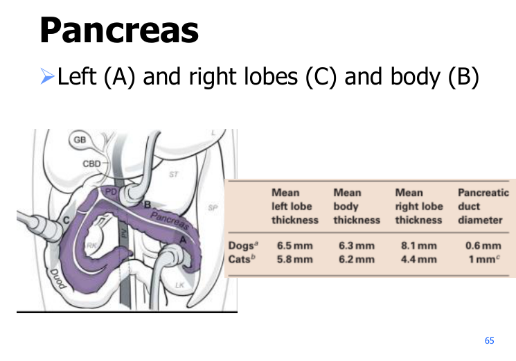
腎臟 Kidney
掃查時分縱切面（Longitudinal）與橫切面（Transverse）評估，正常腎臟應可清楚分辨皮質（cortex）與髓質（medulla）的分界。
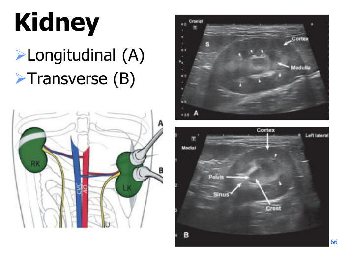
常見腎臟病灶重要
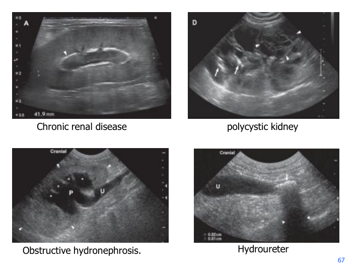
膀胱 Bladder
正常膀胱壁應薄而平滑，腔內尿液呈無迴音；掃查時需注意膀胱三角區（trigone）是腫瘤好發部位。
膀胱病灶：膀胱炎與移形上皮癌
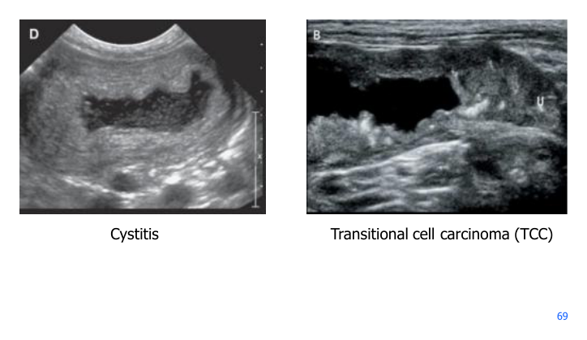
腎上腺 Adrenal Gland
位於腎臟頭側，體積小、需仔細掃查；犬貓的腎上腺厚度／長度有各自的參考範圍，過大提示腎上腺增生或腫瘤（如犬的腎上腺依賴性庫欣氏症）。
| 物種 | 厚度／寬度 | 長度 |
|---|---|---|
| 犬 | 6–8 mm | 10–50 mm |
| 貓 | 3.5–4.5 mm | 10–11 mm |
學習重點整理
考試／臨床實務角度的整理，複習前可先快速掃過本節，找出自己不熟的部分再回對應章節細讀。
練習題 Practice Quiz
涵蓋成像原理、偽像、胸腔／心臟／腹腔超音波各章節重點，先自己作答再點「顯示答案」核對，答錯的觀念請回對應章節重讀一次。
Hyperechoic（高迴音）為強反射、呈白色；Hypoechoic（低迴音）為中等反射、呈灰色；Anechoic（無迴音）為無反射、呈黑色，代表液體（如膽汁、尿液、積液）。
應為相反：頻率越高，解析度越好，但組織穿透深度越淺；頻率越低，穿透深度越深，但解析度較差。這是選擇探頭時頻率與穿透力的核心取捨。
髒聲影（dirty shadowing）常見於氣體與糞便混合的大腸腔，後方呈現不均勻的低迴音區；乾淨聲影則多見於骨骼或結石等高度反射構造，後方近乎全黑。
聲波容易穿透的構造（通常是液體）讓聲波維持較高強度傳遞到更深的組織，因此有更多回音返回探頭，使深層組織的迴音強度出現假性增亮（artifact）。臨床上，若某一構造後方出現回音增強，是判斷該構造內容物「主要為液體」的重要輔助線索（如囊腫、膀胱）。
氣胸的超音波表現是「有 A-line 但沒有 glide sign」；只要能在該部位找到 glide sign 或 B-line（ultrasound lung rocket）任一項，即可排除該處氣胸。
B-line 確實源自肋膜線、呈楔形並延伸貫穿至遠場，但它會「隨呼吸與 glide sign 一起移動」，這也是與其他靜態偽像區分的重要特徵之一。
心臟超音波五種標準切面為：右胸骨旁長軸、右胸骨旁短軸、左心尖、左胸骨旁、劍突下，並無「頸靜脈溝切面」這個標準切面。
PWD（脈衝波都卜勒）可以精確定位特定一點的流速，但流速有上限，超過上限會出現混疊（aliasing），適合用於需要明確定位病灶（如特定瓣膜口）的流速測量。CWD（連續波都卜勒）沒有實際的流速上限，但無法精確定位深度（訊號沿整條取樣線疊加），適合用於測量高速的逆流或狹窄血流（如嚴重二尖瓣逆流、主動脈狹窄）等 PWD 會發生混疊的情境。
肥厚型心肌病（HCM）特徵為心室壁不成比例增厚、心室腔室相對縮小，是貓最常見的原發性心肌病；DCM 則相反，表現為心室擴張合併收縮力下降，好發於大型犬品種。
膽囊黏液囊腫典型呈「奇異果樣」或「星狀（stellate）」圖案，臨床上因有膽囊破裂與膽汁性腹膜炎風險，屬於需要緊急評估手術與否的重要影像所見。
肝臟迴音相對低迴音、質地較顆粒狀，且大致與右腎皮質相近（isoechoic），是評估肝臟是否有瀰漫性病變（如彌漫性增亮或變暗）的重要參考基準。
腸套疊在橫切面上呈現多層同心圓的「靶樣（target）」徵象。其形成機轉是近端腸段（intussusceptum）套入遠端腸段（intussuscipiens）內，使套疊處的腸壁層次在橫切面上重疊呈現同心圓狀；縱切面則可見腸段互相套疊的形態。
黏膜迴音增強合併斑點狀高迴音可見於淋巴漿細胞性腸炎，但也常見於剛進食後的正常生理現象，消化結束後斑點會消失；因此需先排除進食因素、必要時複查，不應僅憑單次影像立即診斷為病理性腸炎。
犬的腸壁厚度參考值依體重分級（如 <15 kg、15–30 kg、>30 kg）而有不同數值，貓則另有獨立的參考值，並非統一使用同一組數值判讀。
皮髓質分界模糊、皮質迴音增強是慢性腎病（CKD）的典型超音波表現；腎盂與輸尿管的無迴音擴張則分別對應阻塞性水腎（obstructive hydronephrosis）與輸尿管擴張（hydroureter），提示下游存在阻塞（如輸尿管結石）。兩組發現可能同時存在於同一隻動物：慢性腎病本身即為多渴多尿的常見病因，若合併阻塞性病灶（如輸尿管結石），則需進一步評估阻塞的位置與程度，因阻塞若未解除可能加速腎功能惡化，兩者需一併處置而非只治療其中一項。
移形上皮癌（TCC）好發於膀胱三角區（trigone），超音波上呈現由膀胱壁向腔內突出的不規則腫塊，與瀰漫性增厚的膀胱炎在分布型態上有所區別，但仍需搭配細胞學／組織學確診。